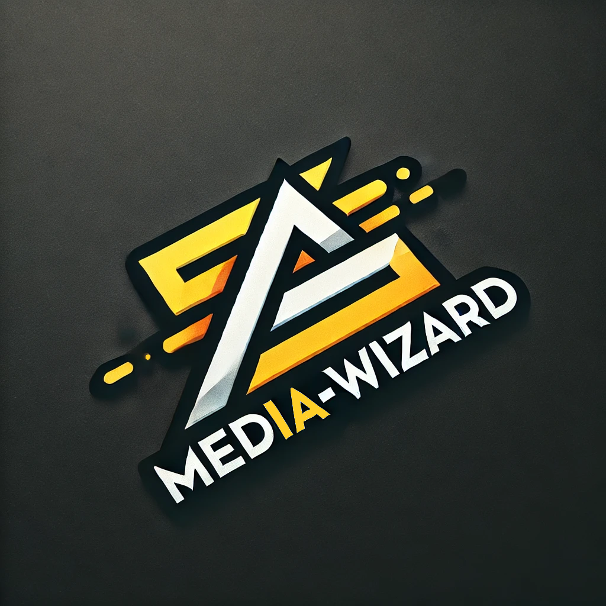

MedIA-Wizard
MedIA-Wizard is a powerful open-source desktop tool for enhancing image and video quality and resolution using advanced AI models. Based on RealScaler, this tool integrates optimized models like Real-ESRGAN, Waifu2x, and Anime4K, offering an optimized media upscaling experience.

🌟 Key Features
- Advanced AI Models for Upscaling: Utilizes Real-ESRGAN, Waifu2x, Anime4K and other optimized models to improve image and video quality with sharp details and noise reduction.
- Batch Processing: Upscale multiple images and videos simultaneously, ideal for restoring entire collections.
- Customizable Settings: Adjust output resolution, image/video format, and select the most suitable AI model for the best results.
- User-Friendly Interface: Designed for users of all skill levels, allowing image and video enhancement in just a few clicks.
- Open-Source: MedIA-Wizard is available under the MIT License, allowing free modification and extension of its functionality.
🚀 Installation
Follow these steps to start using MedIA-Wizard:
- Run the installer and follow the on-screen instructions.
- Launch the application: Run MedIA-Wizard.exe on your Windows system.
- Start enhancing your images and videos!
MedIA-Wizard uses PyInstaller and InnoSetup for easy installation and executable creation.
🛠️ How to Use
- Launch the application: Run MedIA-Wizard.exe as administrator for better performance.
- Select your file: Load images, videos, or entire folders for upscaling.
- Configure the settings: Choose the AI model (Real-ESRGAN, Waifu2x, Anime4K, etc.) and adjust output resolution and format (PNG, JPEG, MP4, etc.).
- Start the process: Click the Start button and let MedIA-Wizard do its work.
- Save the enhanced files: Once the process is complete, the files will be saved in the selected location.
🔍 Quality Comparison
Original Image
Enhanced Image (Real-ESRGAN)
📊 System Requirements
- Operating System: Windows 10 or later.
- RAM: Minimum 4GB, recommended 8GB or more.
- GPU: A NVIDIA GPU is recommended for faster processing.
- Storage: Enough space for output files depending on the size and number of processed media.
📜 Credits and License
MedIA-Wizard is based on RealScaler and integrates several open-source technologies, including:
MedIA-Wizard is distributed under the MIT License. Please refer to the LICENSE file for more details.
🤝 Contributions
Contributions are welcome! Feel free to fork the repository, open issues, and submit pull requests to improve the project.